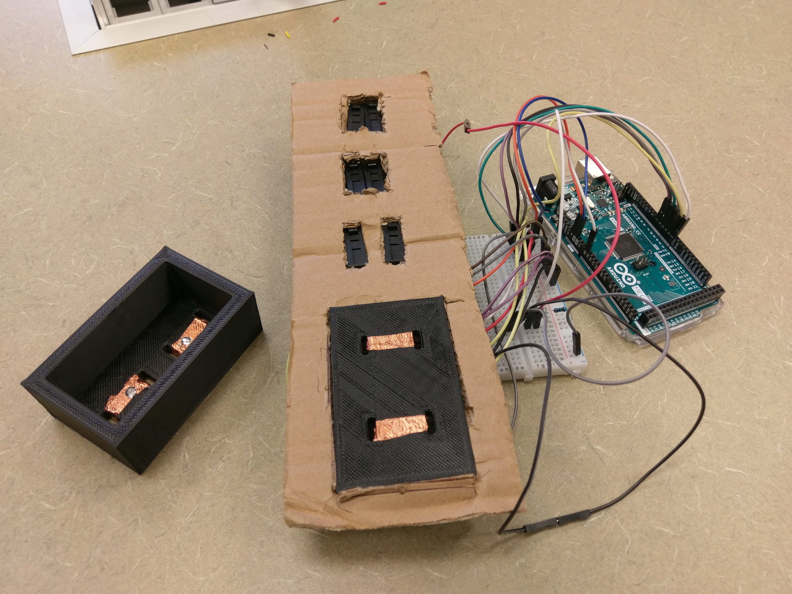
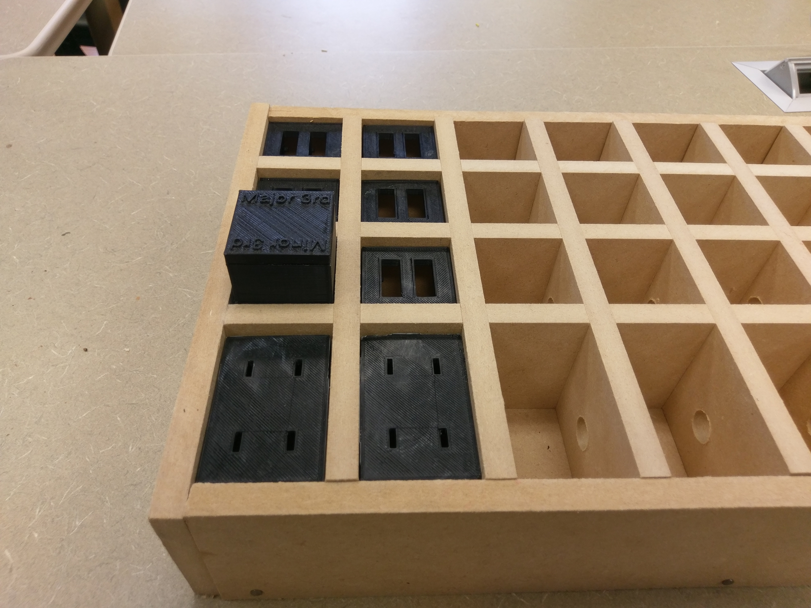
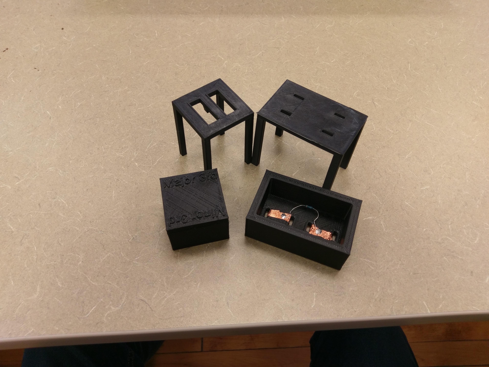
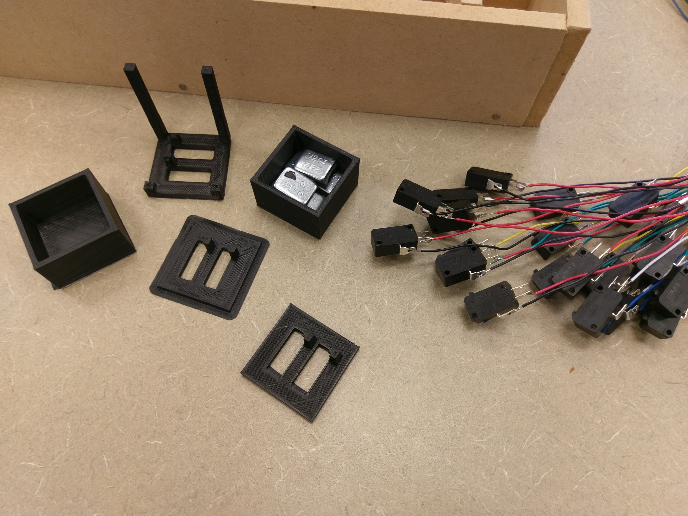
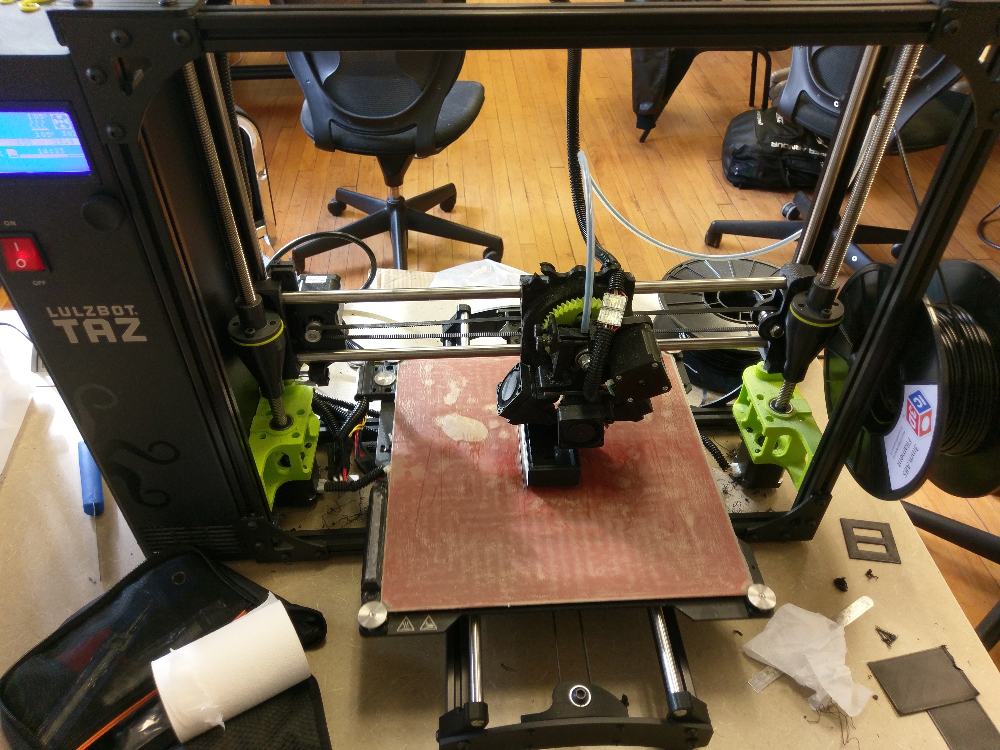
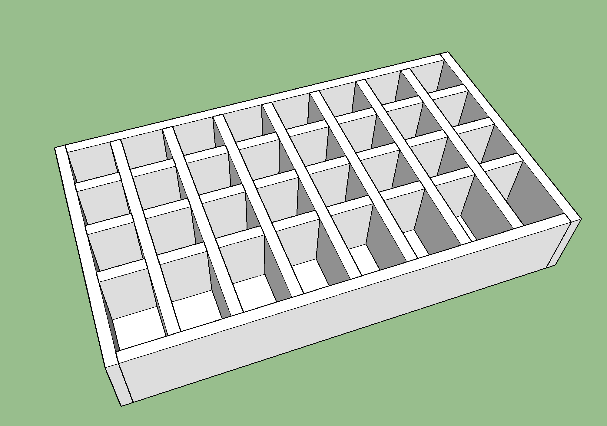
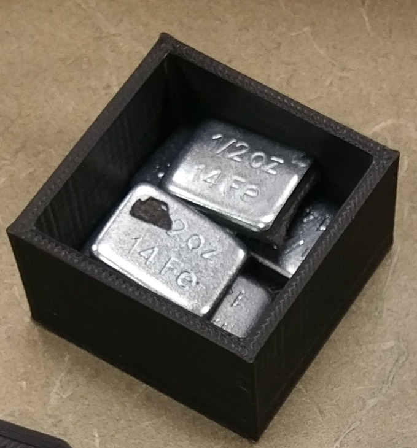
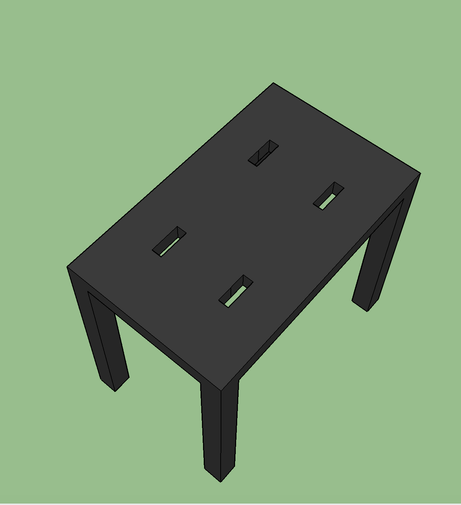
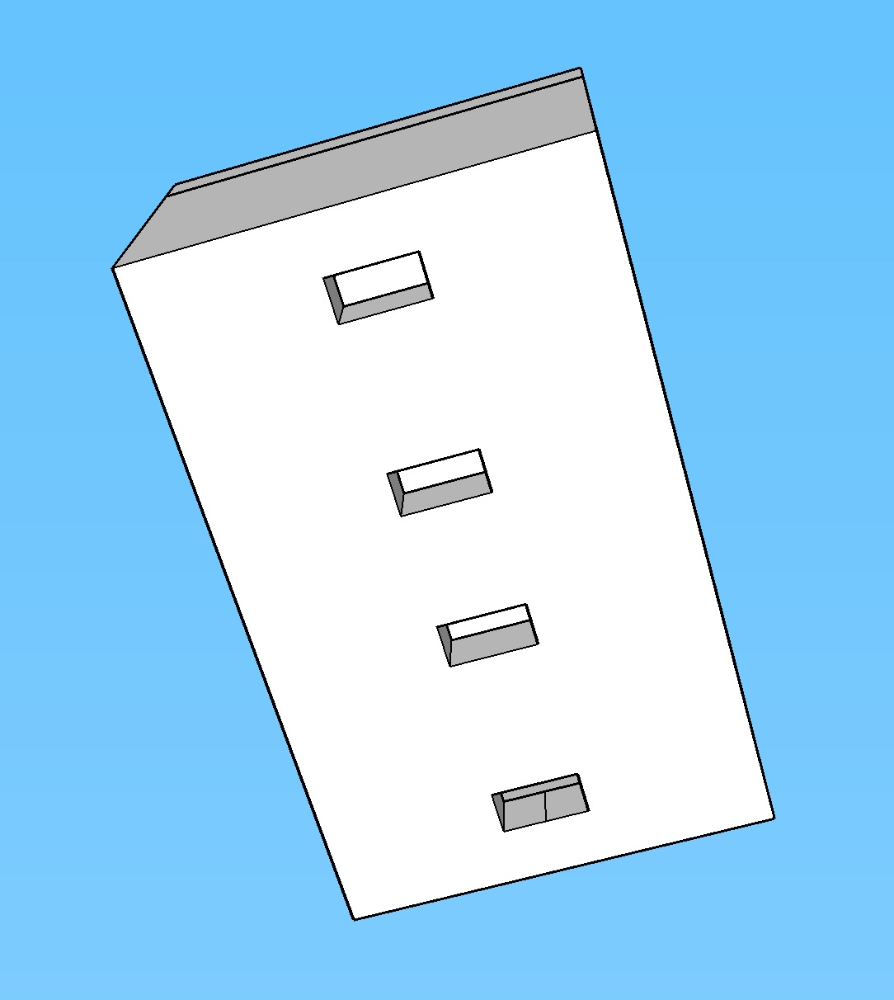

The goal of this project was to create an interactive and educational tool to help people understand chord voicings. The idea was to have a grid where the bottom row corresponds to the root note of the chord and then you have the option to stack minor thirds and major thirds on top. There would be eight columns for the option to have an eight chord progression that continuously loops. Placing blocks in each grid space on the bottom row, moves the root note up or down, and placing blocks in the space above, adds major or minor thirds to the corresponding root note. Changing these blocks around is very easy and allows the user to understand the interactions between these chord voicings and try and make recognizeable or creative chord progressions. There is variation in the timbre of the sounds as well as the tempo. There is a potentiometer on the board that allows you to change the tempo to make the chord progressions faster or slower. We have chosen five timbres that we feel are representative of a variety of genres of music. There is piano, electric guitar, synthesizer, banjo, and rhodes piano. In the future we aim to have this be our area of data collection. We are looking to find out if, given one of these instruments that is representative of a certain genre, are people likely to create chord progressions in the style of that genre?
When considering the electronic design of this project, note blocks and major or minor third intervals needed to be activated when the respective pieces were placed on the board. Initially, embedded RFID readers were considered for use across all game pieces, as the unique IDs assigned to each scannable tag were ideal for creating discrete functional pieces. After testing, this technology proved to be too unreliable for a number of reasons: SPI communication issues between multiple consecutive readers, failure to consistently identify tags of differing type, and failure to read correctly when tags were left in place on the reader. As the major and minor third pieces effectively read in a binary state, digital switches were chosen to be used as the method of activation. Upon further testing with the note block designs, it was determined that a single block could be used to actuate major and minor third switches depending on the orientation of the block on the interval slot. A two switch design was then implemented, with each interval square on the board possessing two switches, one for each interval combination.
The root note blocks are represented by seven resistors of differing value, each corresponding to a scale degree. Copper tape encircling the bottom of the pieces allows the enclosed resistor to make contact with a simple ohmmeter circuit in the board, reading in the resistance of the piece and adjusting the root note value in the code accordingly.
The code for this project operates primarily within a for loop designed to run eight times, or one full sequence through the board. Before the loop begins, two double nested for loops scan through two major and minor pin arrays, initializing 48 digital pins on the Arduino into input pullup mode so they can read the switch state at any given time. One pass through the for loop begins by reading the value of the note block on the given column, or assigning one if the current beat is on the first column on the board, reserved for the root note of the scale. The code then fetches a single dimension array of column semitone values. Finally, a new string is constructed by adding the given semitone values to the root note, starting from the bottom and moving up to construct a chord. The code always builds from the bottom up, so a third placed in the very top slot would still register as a third i.e. the intervals are not position dependent. An output of the MIDI values for the current column is sent to the serial monitor, where it is picked up by the MAX patch.
    The general purpose of the MAX MSP section of this project is to take the data from the Arduino and convert that data into a sound that is played through Ableton Live. MAX MSP has a built-in integration with Ableton Live in the form of MAX for Live and has the ability to read serial data from an Arduino and output into MIDI that Ableton Live can use for real time sound output. This is crucial because when the user is changing blocks on the fly, the column is immediately updated to reflect the change. This needs to be done real time so the user can audibly recognize the decisions that they make on the board and create associations with the overall layout of chords and progressions. The MAX patch takes serial data from the Arduino that has been generated by Jared’s code for note pitch, duration, and a control value that the MAX patch converts into MIDI values. There are two main sections of the MAX patch: the section that takes serial values and converts them into MIDI and the section that allows control mapping of MIDI parameters in Ableton Live devices in MAX MSP. The Ableton Live track is set up with this MAX patch and an Instrument Rack device with five instrument VST’s currently inside to provide a range of sounds including piano, electric guitar, synth, Rhodes piano, banjo, and potentially more. The current instrument being played is determined by the control value retrieved from the Arduino. The MIDI mapping portion of the MAX MSP code is mapped to the Chain Selector parameter in the Instrument Rack device. The Chain Selector selects between the five instruments determined by the control value retrieved from Arduino (0-4). The other MIDI values retrieved from the Arduino that regard pitch and duration are routed into the selected instrument in the Instrument Rack and, like other MIDI devices, are played live through the computer’s speakers.
The sounds that decided on are sounds that encompass different genres with the grand piano sound being the “control” sound. While sounds are not equal, care has been taken to make sure the sounds chosen sound equally pleasing in order to facilitate different preferences of the user while not being so different in quality that the user picks one over another because one sounds too unpleasant.
This section covers a brief overview of the construction of the physical object. This version is made entirely of ½-inch MDF wood. We chose between plywood and MDF for our prototype due to their cheap and abundant nature; as well they are easily worked with using the tools we had available to us. Ultimately we went with the ½-inch MDF as it was the most cost effective material and its soft, easily manipulated structure for small construction processes. Our choice of material did influence our design in that based on the material available and used would determine our ability to create it. For example, if we had gone with a metal, we would have had to find a way to manipulate it without welding as we had no access to a welding torch. However, since a soft wood was chosen, we could go with something more complex and made up of multiple pieces. Since the crux of our project relies on “stacking” or “building” chords, we needed a compartmental, sectional design. As such, a design similar to that of a fishing “tackle box” was decided on as its basic structure is separate boxes for separate lures and baits. For us, we could modify this design as it is seen now: Eight separate columns each with their own set of one root note “box” and three third note “boxes.”
Once we had a final design idea, we had to mock-up how we could create this partitioned box from the MDF. A five-sided, open top box seemed the most logical as it offered a stable structure while allowing for a place for our note blocks without having to add a lifting top or any such surface. These five faces were simply made of the MDF wood and nailed together with decking screws to create the shell of the box. The inside is where it got more complicated. We wanted to make equally partitioned spaces for third blocks and root blocks, however we wanted the spaces for root blocks to be visually different from the third blocks as to make a visual representation of their importance. This was achieved in the form of the root note blocks being larger than the third blocks, meaning the spaces for the root note had to be larger than the third notes. As our box was to be an eight column by 4 row grid, we now had to create one row larger than the others while keeping the other three the same. Ultimately we created our grid by creating an interlocking, modular “lattice” of MDF strips. These strips were created with a table saw and a custom jig, a “pattern” for a specific width and height you want cut from a piece of wood. Finally, we simply placed this lattice inside the box to achieve the “tackle box” look we were going for. The last step in construction was to drill holes inside of the lattice so that wires from each column could remain partitioned off from other columns, but ultimately meet so they would be connected to the other rows. This was done by drilling holes into each column from the top down, but then extra holes across the width of the board on the lowest row; this was done to give the wires one singular path from the board, to the Arduino.
The 3D modeling for the entire project was done in SketchUp. Since it doesn't have a native .stl export function, an extension that allowed SketchUp to export .stl files was downloaded and installed.
To begin the process of modeling the required pieces, we first needed to create a model of the wood box and divider grid. This allowed us to design the pieces around the actual dimensions of the box before the entire box was complete. The first draft of the box is shown in the image below:
After modeling the box with the grid inside, the next step was to design a 3d model that would allow the switches to be positioned facing up. The switches we selected had two mounting holes in the sides, so a model was designed to secure them in place using the holes. Two switches per block were required to detect three different states: no block, major third, and minor third. Both switches were aligned on the same side of each grid space. Depending on which way the block is placed on top of the switches, it will either trigger one switch or the other. Each switch requires around 2.5oz to actuate, and only one switch would be actuated at a time, so weights were installed in the third blocks to ensure actuation every single time. Six weights each weighing 0.5oz were installed in each block to bring the total weight up to over 2.5oz with some to spare. Each block was designed to fit in the grid with a little room to spare, but not so much room as to feel loose. Below is an image of the weights inside the block before the top was attached:
To select the bass note for each chord, larger blocks are placed on the bottom row of each column. Instead of using switches to detect the different bass blocks, we used different values of resistors and assigned different notes to their corresponding values. Copper tape was secured on the bottom of each bass block as well as the spaces where the bass blocks are placed. Below is an image of the 3d model of the bass note block holder:
The bottom of the bass block model is shown in the image below:
As shown in the two previous images, the holes are aligned perpendicular to each other, allowing for copper tape to be applied through the holes and to create closed circuit through a resistor inside each block.